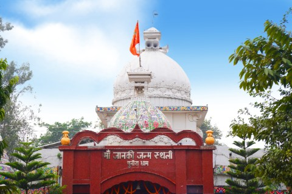
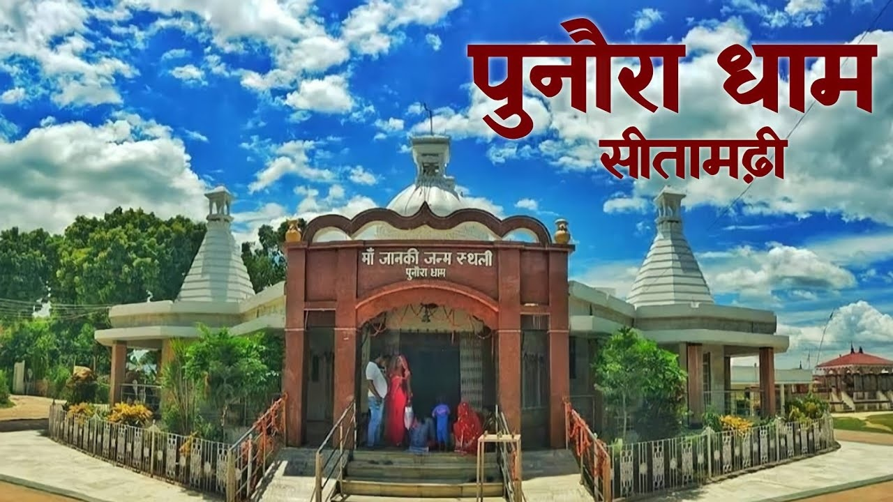
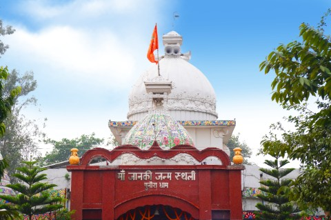
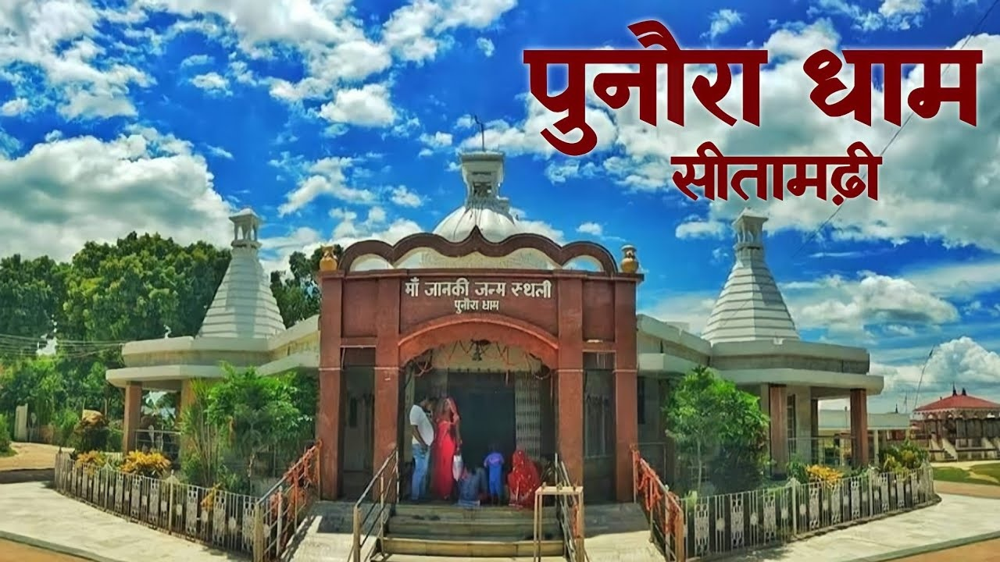

Sitamarhi District of Bihar
Sitamarhi is a district located in the northern part of Bihar, near the border of Nepal. It holds immense historical and mythological significance, as it is believed to be the birthplace of Goddess Sita, the consort of Lord Rama in the epic Ramayana.
The district is part of the Mithila region and showcases rich cultural traditions. Sitamarhi is home to several temples and pilgrimage sites, drawing visitors and devotees from different parts of the country. The most popular among them is the Janki Temple, dedicated to Sita Mata.
 


